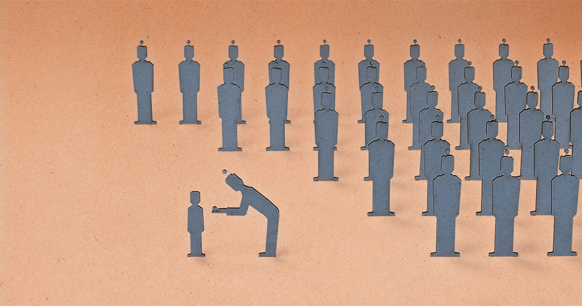

Leyla Fröhlich-Güzelsoy Das Beschneidungsverbot dient nicht dem Kindeswohl
Der unhaltbare euphemistische Vergleich mit der »weiblichen Beschneidung« wird bemüht. Sie ist nicht vergleichbar, weil es sich bei der sogenannten »Beschneidung« der Mädchen um eine Genitalverstümmelung handelt, die weder im Judentum noch im Islam zu finden ist.
Die Beschneidung der Vorhaut des Mannes gehört sowohl im Judentum wie auch im Islam zu den identitätsstiftenden religiösen Pflichten. Aus juristischer Sicht ist der Vorgang zunächst, wie jeder andere ärztliche Eingriff auch, eine Körperverletzung. Sofern ein Eingriff als medizinisch notwendig betrachtet wird, bleibt der Akt der Körperverletzung straffrei. Weiterhin muss die Einwilligung eines mündigen Patienten oder dessen gesetzlichem Vormund vorliegen. Eltern entscheiden somit für ihre nicht einwilligungsfähigen Kinder. Nun hat ein Kölner Landgericht vor zwei Monaten, in zweiter Instanz eine auf Wunsch der muslimischen Eltern durchgeführte Beschneidung eines Kindes grundsätzlich als Unrecht verurteilt. Ärzte, die in Zukunft Zirkumzisionen bei unmündigen Kindern durchführten, handelten strafbar, da sie dem Kindswohl schadeten. Das Kindswohl gehe vor dem Elternrecht auf Religionsfreiheit, hieß es in der Begründung.
Seitdem ist eine sehr kontroverse Debatte in Deutschland ausgebrochen, die bisweilen irritierende Züge annimmt. Juden und Moslems werden als nicht aufgeklärte, primitiv sozialisierte Barbaren dargestellt, schreckliche Bilder eines archaischen Brauches kursieren im World Wide Web und der Presse: Stumpfe Messer, Rasierklingen und Scheren tauchen im Zusammenhang mit der männlichen Zirkumzision auf. Weinende Jungen mit schmerzverzerrten Gesichtern umringt von freudig tanzenden Erwachsenen, die sich nicht um die Not des Kindes sorgen und ihrem kultischen Brauch folgen. Medial wirksame Bilder, die diese Gesellschaft in das „wir“ und „ihr“ teilen, die Klischees in der Bevölkerung bedienen, Zeichen die Bürger dieses Landes zu Fremden stilisieren.
Der unhaltbare euphemistische Vergleich mit der „weiblichen Beschneidung“ wird bemüht. Sie ist nicht vergleichbar, weil es sich bei der sogenannten „Beschneidung“ der Mädchen um eine Genitalverstümmelung handelt, die weder im Judentum noch im Islam zu finden ist. Durch den Vergleich wird aber suggeriert, dies sei auch ein Problem der noch immer als fremd erlebten Religionsgemeinschaften. Die Argumente aus jüdisch-muslimischer Sicht werden ausgeblendet, sofern mit der Gesundheit argumentiert wird: „Ihr Moslems, kommt uns nicht mit der Gesundheit, ihr gehört einer blutrünstigen Religionsgemeinschaft an“, „ihr Juden, regt Euch nicht auf, auch Ihr habt es nicht begriffen, was Humanismus bedeutet“ wird unterstellt.
Dabei werden viele Fakten ignoriert. Eine dieser Fakten ist, dass im Islam die Gesundheit des Menschen – sowohl die körperliche als auch seelische – ein hohes, wenn nicht gar eines der höchsten Güter darstellt. Muslime wissen, dass die Zirkumzision ihrer Söhne in keiner Weise dieser Güterabwägung widerspricht. Nicht viel anders verhält es sich im Judentum, denn auch dort gilt die Maxime, dass das Leben und dessen Erhalt alle anderen Regeln überwiegt.
Fakt ist weiterhin, dass dem Manne mit der Beschneidung nicht die Eichel amputiert, sondern ein Stück Haut entfernt wird. Die Zirkumzision hilft im Kleinkindalter, die Gefahr fieberhafter Harnwegsinfekte und Entzündungen des Penis zu reduzieren. Im Erwachsenenalter vermindert es unter anderem die Gefahr, an einem Prostatakrebs zu erkranken. Die Weltgesundheitsorganisation, WHO, empfiehlt seit 2007 für Schwarzafrika und promiske Paare eine Zirkumzision der Männer. Der Grund dieser Empfehlung waren mehrere Studien in Schwarzafrika, zwei davon wurden aus ethischen Gründen abgebrochen, weil die nicht beschnittene Vergleichsgruppe ein statistisch signifikant erhöhtes Risiko für sexuell übertragbare Erkrankungen, wie HIV aufwies. Die Daten dieser randomisierten, kontrollierten Studie stützen wiederum Daten aus ca. vierzig anderen epidemiologischen Beobachtungsstudien. Der Lanzet, eine der wichtigsten medizinischen Fachzeitschriften berichtete von diesen Studien.
Weltweit ist jedes dritte männliche Wesen beschnitten, nicht nur aus religiösen oder kulturellen, sondern oft eben auch aus hygienischen Gründen. Die Zirkumzision gilt somit für promiske Paare als eine weitere und nicht unerhebliche Form der Prävention – am Besten in Kombination mit dem Kondom. Bei Mädchen wird ab dem zehnten Lebensjahr (also im nicht mündigen Alter), eine Impfung gegen eine andere sexuell übertragbare Erkrankung empfohlen und durchgeführt: die HPV-Impfung gegen Feigwarzen, welche sehr oft für das Auftreten von Gebärmutterhalskrebs verantwortlich sind. Feigwarzen finden sich bei Männern häufig, nicht sichtbar unter der Vorhaut. Auch Impfungen stellen juristisch eine Körperverletzung dar, sofern keine Einwilligung vorliegt oder die Nebenwirkungen nicht im Verhältnis zur medizinischen Notwendigkeit stehen. Bestimmte Impfstoffe können zu starken Nebenwirkungen, bis hin zum Tod durch Blutvergiftung oder Hirnhautentzündung führen. Warum aber werden Impfungen nicht verboten, auch wenn hier ein ähnlich leidenschaftlicher Kampf durch Impfgegner zu Felde getragen wird, wie auch durch die Gegner der Zirkumzision? Warum verbietet der Gesetzgeber die Otopexie nicht? Weil der Gesetzgeber die verschiedenen Güter gegeneinander abwägt, weil der Gesetzgeber weiß, dass der Schaden ohne die Impfung für das Kind statistisch schlimmer sein kann als mit Impfung.
Dass es für Kinder und deren seelische und soziale Entwicklung elementar ist, ob sie erkennbarer Teil einer Gemeinschaft sind, wird bei der Diskussion um die Zirkumzision außer Acht gelassen. Es gehört auch nicht zu den primären Aufgaben von Juristen, über die Seelennot ihrer Klienten zu entscheiden. Dies ist bei einem Blick auf das Familienrecht ersichtlich: Das Einschalten von Anwälten bei einer Scheidung bedeutet leider selten eine Deeskalation eines möglicherweise vorangegangenen Streites. Juristen argumentieren normativ über Recht, denn Recht bedeutet nicht automatisch das, was die Volksseele als gerecht empfinden würde. Dies ist auch gut so und doch sollte ein guter Richter sich auch der normativen Frage der Güterabwägung stellen und nicht stur und gradlinig einem einzelnen logischen Gedankengang Folge leisten. Denn auch beim Kind mit Segelohren und anderen Feldern der plastischen Chirurgie scheint es ja durchaus zu gelingen, die sozialen und psychologischen Implikationen für das Kindeswohl zu berücksichtigen. Warum vermochte der Richter dieses nicht auch bezüglich der Zirkumzision zu erwägen? Hat sich der Richter gefragt, wie es sich für Millionen von Kindern in diesem Land anfühlt, wenn deren Eltern kriminalisiert werden, die aus bestem Wissen und Gewissen agieren, ihrem Brauch folgen und wissen, dass dieser Brauch zudem medizinisch sinnvoll ist?
Kulturrelativismus ist gefährlich, wenn es um Themen wie die weibliche Genitalverstümmelung oder die Hymenalrekonstruktion geht, da es sich hierbei um patriarchalische Traditionen handelt, die vornehmlich der Unterdrückung der Frau dienen. Kulturrelativismus vergisst, dass Menschenrechte universell und unteilbar sind. Kulturrelativismus ist gefährlich aber Ethnozentrismus ist nicht minder gefährlich, da er Menschen Identitäten abspricht. Wieder sind es deutsche Richter/Staatsanwälte und ja, leider auch wieder Ärzte, die einem Ethnozentrismus folgend eine Abwägung der Güter unterlassen, wenn sie die Beschneidung verboten sehen wollen. Sie folgen einem gesellschaftlichen Konsens und glauben fest daran zu den „Guten“, den „aufgeklärten“, den „Humanisten“ und „wahren Menschenfreunden“ zu gehören. Es sind Menschen, die an ihre eigenen, guten Absichten glauben!